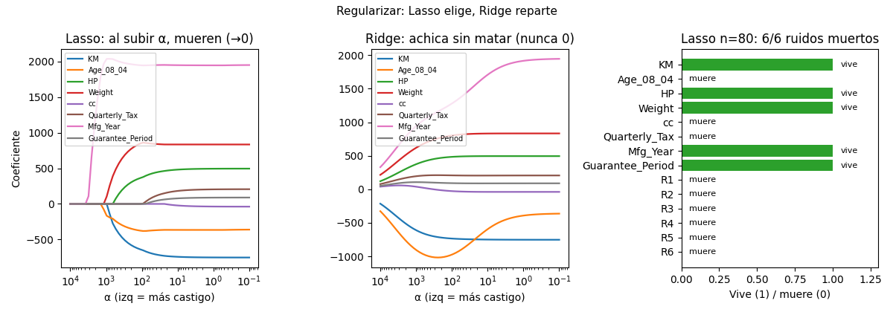

Unidad 5 · Selección de variables y regularización · Lección 0021
Ridge y Lasso: achicar vs elegir
Win de hoy: regularizar las 8 candidatas: Ridge achica sin matar (reparte entre duplicadas), Lasso lleva a 0 y elige (mata 6/6 ruidos en n=80).
1 · Regularizar: multar coeficientes grandes
Regularizar es agregar una multa por coeficientes grandes al ajuste: el modelo equilibra “pegarle a los datos” con “no pasarse de rosca”. La perilla es α: α = 0 es OLS puro, α grande aplasta todo. Ojo previo: regularizar exige estandarizar (0008), o la multa castiga según la escala y no según la importancia.
2 · Lasso: la multa que mata (elige variables)
Lasso multa la suma de valores absolutos (|β|). Esa geometría (esquinas) lleva coeficientes
exacto a 0: variable muerta = variable no elegida. En el camino (figura) se ve morir una por una
al subir α. Demo fuerte: con n=80 y 6 ruidos, LassoCV (α = 129,3) mata los 6/6 ruidos
y se queda con KM, HP, Weight, Year, Guarantee. (Con las 1436, CV casi no poda: sobran datos.)
from sklearn.linear_model import LassoCV
lz = LassoCV(cv=5, random_state=42).fit(X_estandarizada, y)3 · Ridge: la multa que reparte (achica todo)
Ridge multa la suma de cuadrados (β²): achica todos los coeficientes pero nunca a 0. Su talento: duplicadas. Con Age+Year (r = −0,98), OLS loteriza (0019); Ridge (α = 10) reparte el peso entre ambas (−594 / +1.709 vs −359 / +1.950 OLS) y estabiliza. Ridge no elige: calma.
4 · Figura: dos caminos, un veredicto

Regenerar la figura (mismo resultado versionado en assets/img/toyota/):
python scripts/make_figures.py --only ridge-lasso-caminos5 · Quiz (auto-chequeo inmediato)
6 · Fuente primaria y cierre
Para profundizar (1 fuente): James et al., An Introduction to Statistical Learning — capítulo de regularización (Ridge, Lasso) (statlearning.com, PDF libre; también en RESOURCES.md del curso).
¿Algo no quedó claro? Preguntame al agente: leer un camino de coeficientes, elegir α por CV, o Ridge vs Lasso para tu caso. Esa pregunta vale más que releer.